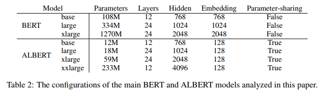

ALBERT: A LITE BERT FOR SELF-SUPERVISED LEARNING OF LANGUAGE REPRESENTATIONS
摘要
在预训练自然语言表示时增加模型大小通常会提高下游任务的性能。 但是，由于 GPU / TPU 内存的限制，更长的训练时间以及意外的模型降级，在某些时候，进一步的增加模型大小变得更加困难。 为了解决这些问题，我们提出了两种减少参数的技术，以降低内存消耗并提高 BERT 的训练速度 (Devlin et al., 2019). 。 全面的实验证据表明，与原始 BERT 相比，我们提出的方法所构建的模型可扩展性更好。 我们还使用了一个专注于建模句子间的连贯性的自监督损失，结果表明该损失始终可以提升多句子输入的下游任务的性能。 最后，我们的最佳模型在 GLUE，RACE 和 SQuAD 基准上建立了最新的技术成果，而参数参数却比 BERT-large 少。
1引言
全网络预训练（Radford et al., 2018; Devlin et al., 2019）在语言表示学习方面取得了一系列突破。许多非平凡的 NLP 任务，包括那些训练数据有限的任务，都已从这些预先训练的模型中受益匪浅。这些突破最令人信服的迹象之一是针对中国的中学和高中英语考试而设计的阅读理解任务 RACE 测试（Lai et al., 2017）上机器性能的发展：最初描述了任务并制定建模挑战报告，然后将最新机器的准确性提高到44.1％；最新公布的结果报告其模型性能为83.2％（Liu et al., 2019）；我们在这里所做的工作将其提高到了89.4％，惊人的45.3％的提高，这主要归功于我们目前构建的高性能的预训练语言表示的能力。
这些改进的证据表明，大型网络对于实现最佳性能至关重要（Devlin et al., 2019; Radford et al., 2019）。对大型模型进行预训练并将其蒸馏成更小的模型（Sunetal.,2019;Turcetal., 2019）已普遍应用于实际应用。考虑到模型大小的重要性，我们想问的是：拥有更好的 NLP 模型和拥有更大的模型一样容易吗？
回答此问题的障碍是可用硬件的内存限制。鉴于当前最先进的模型通常具有数亿甚至数十亿个参数，当我们尝试扩展模型时，很容易遇到这些限制。在分布式训练中，由于通信开销与模型中的参数数量成正比，因此训练速度也可能受到显着影响。我们还观察到，仅仅增加诸如 BERT-large 之类的模型的隐藏层大小（Devlin et al., 2019）可能会导致性能下降。表1和图1给出了一个典型示例，在该示例中，我们将 BERT-large 的隐藏层的大小增加了2倍得到 BERT-xlarge 模型，然而该 BERT-xlarge 模型得到了较差的结果。


解决上述问题的现有解决方案包括模型并行化（Shoeybi et al., 2019）和智能的内存管理（Chen et al., 2016; Gomez et al., 2017）。这些解决方案解决了内存限制问题，但没有解决通信开销和模型降级的问题。在本文中，我们通过设计具有比传统 BERT 架构少很多参数的 Lite BERT（ALBERT）架构来解决所有上述问题。 ALBERT 结合了两种参数缩减技术，这些技术可消除缩放预训练模型时的主要障碍。第一个是因式分解参数化。通过将大的词汇嵌入矩阵分解为两个小的矩阵，我们将隐藏层的大小与词汇嵌入的大小分开。这种分隔使得在不显着增加词汇表嵌入参数大小的情况下，更容易增加隐藏层的大小。第二种技术是跨层参数共享。此技术可防止参数数量随着网络的深度而增长。两种技术都可以显着减少 BERT 的参数数量，而不会严重影响性能，从而提高了参数效率。与 BERT-large 相似的 ALBERT 配置参数减少了18倍，并且训练速度提高了约1.7倍。参数减少技术还可以充当正则化的一种形式，从而稳定训练并有助于泛化。为了进一步提高 ALBERT 的性能，我们还引入了一种自监督的句子顺序预测损失（SOP）。 SOP 主要关注句子间的连贯性，旨在解决原始 BERT 中提出的下一个句子预测（NSP）损失的无效性（Yang et al., 2019; Liu et al., 2019）。由于这些设计决策，可以适应更大的 ALBERT 配置，这些配置的参数仍比 BERT 较大，但性能却明显好于BERT。我们在著名的 GLUE，SQuAD 和 RACE 基准上建立了最新的最新结果，以帮助人们理解自然语言。具体来说，我们将 RACE 精度提高到89.4％，将 GLUE 基准提高到89.4%，将 SQuAD 2.0 的 F1 得分提高到92.2%。
2 相关工作
2.1 扩大自然语言的表示学习
自然语言的表示学习已被证明对许多 NLP 任务有用，并被广泛采用 (Mikolov et al., 2013; Le & Mikolov, 2014; Peters et al., 2018; Devlin et al., 2019; Radford et al., 2018; 2019)。 过去两年中最显着的变化之一是从预训练词嵌入 (无论是标准的(Mikolov et al., 2013; Penningtonetal.,2014）还是上下文的（McCannetal.,2017;Petersetal.,2018)) 转变为全网络预训练，然后进行任务特定的微调 (Radford et al., 2018; Devlin et al., 2019)。在这些工作中，经常表明更大的模型尺寸可以提高性能。例如，Devlin et al. (2019) 表明，在三个选定的自然语言理解任务中，使用较大的隐藏层大小，更多的隐藏层以及更多的注意力头数总是可以提高性能。但是，隐藏层大小都是最大为1024。我们表明，在相同设置下，将隐藏层大小增加到2048会导致模型降级，从而导致性能下降。因此，扩大自然语言的表示学习并不像简单地增加模型大小那样容易。另外，由于计算限制，尤其是在 GPU / TPU 内存限制方面，很难对大型模型进行实验。鉴于当前最佳的模型通常具有数亿甚至数十亿个参数，因此很容易就达到内存限制。为了解决这个问题，Chen et al. (2016) 提出了一种称为梯度检查点的方法，以减少额外的前向传递为代价的亚线性存储需求。Gomez et al. (2017) 提出了一种从下一层重建每个层的激活的方法，这样它们就不需要存储中间激活。两种方法都以速度为代价减少了内存消耗。相反，我们的参数减少技术可减少内存消耗并提高训练速度。
2.2跨层参数共享
跨层共享参数的想法先前已使用 Transformer架构（Vaswanietal。，2017）进行了探索，但此先前的工作重点是针对标准 encoder-decoder 任务的训练，而不是 pretraining/finetuning 。与我们的观察结果不同，Dehghani et al. (2018) 表明具有跨层参数共享的网络（Universal Transformer，UT）在语言建模和主谓词一致方面比标准 Transformer 具有更好的性能。最近， Bai et al. (2019) 提出了Transformer网络的深度均衡模型（DQE），并证明 DQE 可以达到一个平衡点，对于该平衡点，某层的输入嵌入和输出嵌入保持相同。我们的观察表明，我们的嵌入是振荡的而不是收敛的。 Hao et al. (2019) 将参数共享 Transformer 与标准Transformer相结合，这进一步增加了标准 Transformer 的参数数量。
2.3句子排序目标
ALBERT 使用了预测两个连续文本段的顺序的预训练损失。几位研究人员已经尝试过与话语连贯性相似的预训练目标。话语中的连贯性和衔接性已得到广泛研究，并且已经发现许多现象将相邻的文本片段连接起来 (Hobbs, 1979; Halliday & Hasan,1976;Groszetal.,1995)。在实践中发现的大多数目标都非常简单。通过使用句子编码来预测相邻句子中的单词，可以学习 Skip-thought (Kirosetal.,2015) 和 FastSent (Hilletal.,2016) 的句子嵌入。句子嵌入学习的其他目标包括预测未来的句子而不是仅预测邻居 (Ganetal.,2017) 和预测显式的语篇标记 (Jernite et al., 2017; Nie et al., 2019)。我们的损失与 Jernite et al. (2017) 的句子排序目标最相似。 其中学习句子嵌入以确定两个连续句子的顺序。但是，与上述大多数工作不同，我们的损失是根据文本段而不是句子来定义的。 BERT（Devlin et al., 2019）使用损失的依据是预测对中的第二个片段是否已与另一个文档中的一个片段交换。我们在实验中比较了这种损失，发现句子排序是一项更具挑战性的预训练任务，对某些下游任务更有用。与我们的工作同时， Wang et al. (2019) 也尝试预测文本的两个连续段的顺序，但他们将其与原始的下一句预测结合在三向分类任务中，而不是根据经验对两者进行比较。
3 ALBERT的设计
在本节中，我们介绍 ALBERT 的设计，并提供与原始BERT架构（Devlin et al., 2019）相应配置的量化比较。
3.1模型架构选择
ALBERT 架构的主干与 BERT 相似，因为它使用了具有 GELU nonlinearities （Hendrycks & Gimpel, 2016）的 Transformer 编码器(Vaswani et al.,2017)。 我们遵循 BERT 符号约定，将 vocabulary embedding 大小表示为 E，将编码器层的数量表示为 L，将隐藏大小表示为 H。根据 Devlin et al.(2019)，我们将 feed-forward/filter 大小设置为 4H，attention heads 设为 H=64。
ALBERT对 BERT 的设计选择做出了三点主要贡献
Factorized embedding parameterization. （因式分解嵌入矩阵参数化）. 在 BERT 中，以及随后的建模改进（例如 XLNet (Yang et al.,2019)和 RoBERTa （Liu et al.,2019）中，WordPiece 嵌入大小 E 与隐藏层大小 H（即E≡H）相关联。出于建模和实际原因，效果欠佳，如下所示。
从建模角度看，WordPiece embeddings 旨在学习上下文无关的表示，而 hidden-layer embeddings 旨在学习上下文相关的表示。正如上下文长度实验（Liu et al.,2019）所表明的那样，类似 BERT 的表征的力量来自上下文的使用，以提供学习此类依赖于上下文表征的信号。这样，将 WordPiece embeddings 的大小E与hidden-layer 大小H脱开，这可以使我们更有效地利用由建模需求指示的所有模型参数，从而指示 H>>E。
从实践的角度来看，自然语言处理通常要求词汇量 V 很大。如果E≡H，则增加 H 会增加嵌入矩阵的大小 V×E。这很容易形成具有数十亿个参数的模型，其中大多数参数仅在训练期间稀疏更新。
因此，对于 ALBERT，我们使用嵌入参数的分解，将它们分解为两个较小的矩阵。与其直接将单热点向量直接投影到大小为 H 的隐藏空间中，不如将它们投影到大小为 E 的低维嵌入空间中，然后将其投影到隐藏空间中。通过这种分解，我们将嵌入参数从O(V×H)减少到 O(V×E + E×H) 。当 H>>E 时，此参数减小地非常明显。
Cross-layer parameter sharing. （跨层参数共享）. 对于 ALBERT，我们提出了跨层参数共享作为提高参数效率的另一种方法。有多种共享参数的方式，例如，仅跨层共享前馈网络 FFN 的参数或仅共享 attention 层的参数。ALBERT默认跨层共享所有的参数。第4.5节的实验中，我们将此设计与其他策略进行了比较。
Dehghani et al.(2018)（Universal Transformer,UT）和 Bai et al.(2019)（Deep Equilibrium Models,DQE） 针对 Transformer 网络探索了类似的策略。 与我们的观察结果不同，Dehghani et al.(2018) 表明 UT 优于 vanilla Transformer。 Bai et al.(2019) 表明，它们的 DQE 达到了一个平衡点，对于该平衡点，特定层的输入和输出嵌入保持不变。 我们对L2距离和余弦相似度的测量表明，我们的嵌入是振荡的，而不是收敛的。
图2显示了使用 BERT-large 和 ALBERT-large 配置的每一层输入和输出嵌入的 L2 距离和 余弦相似度（参见表2）。我们观察到，与 BERT 相比，ALBERT从一层到另一层的过渡要平滑得多。这些结果表明，权重共享对稳定网络参数有影响。尽管与 BERT 相比，这两个指标都有所下降，但是即使经过24层，它们也不会收敛为0。这表明 ALBERT 参数的解决方案空间与DQE发现的空间有很大不同。

Inter-sentence coherence loss. （句子间连贯性损失）. 除了掩码语言模型 Masked Language Model 损失(Devlin et al.,2019)之外，BERT 还使用了另一种损失，称为下一句预测 NSP。 NSP是一种二分类损失，用于预测原始文本中是否有两个片段连续出现，如下所示：通过从训练语料库中获取连续片段来创建正样本；负样本是通过将来自不同文档的句段配对而创建的；正样本和负样本均以相同的概率采样。NSP 目标旨在提高下游任务（例如自然语言推理）的性能，这些任务需要推理句子对之间的关系。然而，随后的研究（Yang et al., 2019; Liu et al.,2019）发现 NSP 的影响不可靠，因此决定去除它，这一决定得到了多项下游任务性能的改善的支持。
我们推测，与 MLM 相比，NSP 失效的主要原因是其缺乏任务难度。按照规定，NSP 可以在单个任务中融合主题预测和连贯性预测。但是，与连贯性预测相比，主题预测更容易学习，并且与使用 MLM损失学习l的内容重叠更多。
我们坚持认为句间建模是语言理解的一个重要方面，因此我们提出了一个主要基于连贯性的损失。也就是说，对于 ALBERT，我们使用了句子顺序预测 SOP 损失，它避免了主题预测，而侧重于建模句子间的连贯性。 SOP损失使用与 BERT（同一文档中的两个连续段）相同的技术作为正样本，而负样本使用与正样本相同的两个连续段，但顺序互换。这迫使模型学习关于话语级连贯性的细粒度区别。如我们在第4.6节中所示，事实证明 NSP 根本无法解决 SOP 任务（即最终学习了更容易的主题预测信号，并在 SOP 任务上以随机基线水平执行），而 SOP可以在一定程度上解决 NSP 任务，大概是基于分析错位的相干线索。结果，ALBERT 模型持续提高了多语句编码任务的下游任务性能。
3.2 模型设置
表2给出了BERT和ALBERT模型在超参数设置上的差异。由于以上讨论的设计选择，ALBERT模型的参数尺寸比相应的BERT模型要小得多。

例如，与 BERT-large 相比，ALBERT-large 少了大约18倍的参数，前者是18M，后者是334M。如果我们 BERT 设置为 H = 2048 的超大尺寸，我们最终得到一个拥有12.7亿的模型参数，并且性能更差(图1)。相比之下,一个配置为H = 2048的 ALBERT-xlarge 只有59M参数，而一个配置为 H = 4096 的 ALBERT-xxlarge 有233M参数，即大约为70%的 BERT-large 参数。注意，对于 ALBERT-xxlarge，我们主要报告12层网络上的结果，因为24层网络（具有相同的配置）可以获得类似的结果，但在计算上更昂贵。
DISCUSSION
虽然 ALBERT-xxlarge 的参数比 BERT-large 少，并且得到了更好的结果，但是由于它的结构更大，计算上更昂贵。下一步的重点是通过稀疏注意力(Child et al.， 2019)和块注意力(Shen et al.， 2018)等方法加快 ALBERT 的训练和推理速度。可以提供额外表示能力的正交研究线包括硬示例挖掘(Mikolov et al.,2013)和更有效的语言建模训练(Yang et al.,2019)。此外，尽管我们有令人信服的证据，句子顺序预测更有益于学习任务，并产生更好的语言表示，我们猜测可能有更多的维度没有被当前自监督训练损失捕获，这些维度可以创建额外的表示力。